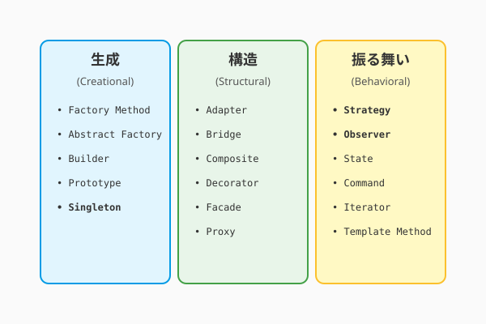
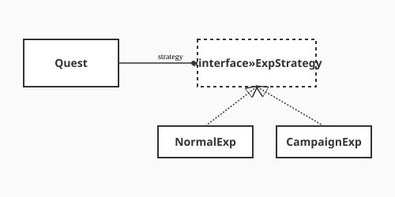

2.4 どう受け継ぐか？——デザインパターンの知恵
ここまでの旅で、あなたは「オブジェクト指向」という魔法の源（2.1節）を手に入れ、「UML」という魔法陣（2.2節）を描き、「SOLID原則」という黄金律（2.3節）を学びました。
しかし、実際の冒険（開発）では、似たような挑戦に何度も遭遇することになります。 「変化するアルゴリズムをどう切り替えるか？」「状態の変化をどうやって皆に知らせるか？」「複雑なオブジェクトをどうやって生成するか？」
安心してくだい。これらの問題は、あなたより先にこの道を歩いた「古の賢者たち」も悩み、そして解決してきたものです。彼らが残した解決策の結晶、それがデザインパターンです。
これは単なる再利用ではありません。「知恵の継承」です。先人たちの知恵を受け継ぎ、巨人の肩の上に立つことで、私たちはより遠くへ行けるのです。
パターン・ランゲージ：建築家からの贈り物
次の図は、GoFが定義した23のデザインパターンを「生成・構造・振る舞い」という三つの分類でまとめた全体地図を示しています。

ここで示された三つの分類は、パターンを選ぶ際の道標となります。「どうオブジェクトを生み出すか」という生成パターン、「どう組み合わせて構造を作るか」という構造パターン、そして「どう協調して振る舞いを実現するか」という振る舞いパターン——自分が直面している課題がどの分類に属するかを見極めることで、適切な「処方箋」を素早く引き出せるようになります。
「パターン」という考え方は、実はソフトウェアの世界で生まれたものではありません。 元々は建築家クリストファー・アレグザンダーが提唱したパターン・ランゲージという概念です。彼は、心地よい街や建物に共通する「構造」をパターンとして抽出しました。
「日当たりの良い場所（Sunny Place）」や「縁側（Arcade）」のように、名前をつけることで、誰もがその良さを認識し、設計に取り入れられるようにしたのです。
この「共通の課題に、名前のついた解決策を与える」という思想が、ソフトウェアエンジニアリングにも輸入されました。私たちもまた、バーチャルな世界に「心地よい構造」を築く建築家だからです。
GoFのデザインパターン
1994年、4人の賢者（Gang of Four: GoF）によって記されたグリモワール『デザインパターン』は、この思想をソフトウェアの世界で決定的なものにしました。彼らは23のパターンを定義しましたが、現代のAI駆動開発において特に重要なのは以下の3つの分類です。
- 生成に関するパターン（Creational）: 「どう生み出すか」の知恵（例：Factory Method）
- 構造に関するパターン（Structural）: 「どう組み合わせるか」の知恵（例：Adapter）
- 振る舞いに関するパターン（Behavioral）: 「どう協調するか」の知恵（例：Strategy, Observer）
パターンは「共通言語」
「ここにStrategyパターンを使おう」と言えば、世界中のエンジニア（そしてAI）に一瞬で意図が伝わります。パターンを学ぶことは、より高度な魔法の言葉を習得することと同じなのです。
GoFの23の紋章（全パターン一覧）
すべてのパターンを一度に覚える必要はありませんが、目録として知っておくと便利です。本書の世界観に合わせて、ひとこと比喩を添えました。
| 分類 | パターン名 | ひとこと比喩 |
|---|---|---|
| 生成 | Factory Method | 「町工場」：製品の作り方は工場に任せる |
| Abstract Factory | 「王立工廠」：関連する製品群をまとめて作る | |
| Builder | 「建築手順書」：複雑な建築手順を段階的に進める | |
| Prototype | 「影分身」：自分自身のコピーを作って増える | |
| Singleton | 「唯一神」：世界に一つしか存在しないことを保証する | |
| 構造 | Adapter | 「翻訳機」：異なる言葉（インターフェース）を繋ぐ |
| Bridge | 「機能と実装の架け橋」：両者を独立して拡張する | |
| Composite | 「マトリョーシカ」：全体と部分を同じように扱う | |
| Decorator | 「着せ替え人形」：中身を変えずに機能を追加・装飾する | |
| Facade | 「執事」：複雑な裏側を隠し、シンプルな窓口になる | |
| Flyweight | 「共有倉庫」：大量の細かいオブジェクトを共有して軽くする | |
| Proxy | 「代理人」：本人の代わりにアクセスを制御する | |
| 振る舞い | Chain of Responsibility | 「たらい回し」：責任を持てる人が見つかるまで次へ渡す |
| Command | 「命令書」：要求をオブジェクトとしてカプセル化する | |
| Interpreter | 「通訳」：文法規則に従って言語を解釈する | |
| Iterator | 「ガイド」：内部構造を知らなくても要素に順にアクセスする | |
| Mediator | 「仲介者」：オブジェクト同士の複雑な通信を整理する | |
| Memento | 「セーブポイント」：状態を保存し、後で復元する | |
| Observer | 「狼煙（のろし）」：状態変化を登録者に通知する | |
| State | 「変身」：状態によって振る舞いを変える | |
| Strategy | 「軍師の策」：アルゴリズム（戦術）を切り替える | |
| Template Method | 「秘伝のレシピ」：処理の枠組みを決め、詳細は子に任せる | |
| Visitor | 「訪問者」：データ構造と処理を分離する |
※ 太字 は、以下の実践例で詳しく解説する、現代のAI駆動開発においても特に頻出のパターンです。なお、RepositoryパターンはGoFには含まれませんが（PofEAA由来）、現代の設計では必須級のため併せて紹介します。
実践例: QuestForgeへの継承
QuestForgeの開発において、特に役立つ「3つの処方箋」を紹介しましょう。
1. Strategyパターン：戦術の切り替え
パターンの地図と共通言語を手に入れた今、QuestForgeという実際の冒険の場で、それらの処方箋がどう生きるかを確かめましょう。次の図は、Strategyパターンを使って経験値（XP）計算ロジックを差し替え可能にした設計の構造を示しています。

ここでのポイントは、Quest クラスが具体的な計算式を「知らない」という点です。Quest は「計算してほしい」という依頼を ExpStrategy インターフェースに投げるだけで、実際に通常計算をするのか、キャンペーン倍率を適用するのかは、切り替えられたストラテジー次第です。新しい計算ルールが生まれても、既存のコードは一切変えずに新しいクラスを追加するだけで対応できます。これが開放閉鎖の原則（OCP）の美しい実例です。
課題: クエストの経験値計算ロジックが、「通常時」「キャンペーン期間中」「プレミアム会員」などで頻繁に変わる。if文の嵐になりそうだ。
処方箋: 「計算ロジック（戦術）」をクラスとして独立させ、切り替え可能にする。
# 戦術のインターフェース
class ExpStrategy:
def calculate(self, base_exp): pass
# 具体的な戦術
class NormalStrategy(ExpStrategy):
def calculate(self, base_exp): return base_exp
class CampaignStrategy(ExpStrategy):
def calculate(self, base_exp): return base_exp * 2
# 使用者（コンテキスト）
class Quest:
def __init__(self, strategy: ExpStrategy):
self.strategy = strategy
def complete(self):
return self.strategy.calculate(self.base_xp)効果: どんなに計算式が増えても、Questクラスは無傷です（OCPの遵守）。
2. Observerパターン：狼煙（のろし）を上げる
課題: クエストを完了した時、「レベルアップの確認」「バッジの付与」「UIの更新」「ログの送信」など、やりたいことが山ほどある。これらを全部 complete() メソッドに書くと、結合度が爆発する。
処方箋: 「何かが起きた（イベント）」ことだけを通知し、興味がある人（オブザーバー）に勝手に動いてもらう。
class QuestSubject:
def __init__(self):
self._observers = []
def attach(self, observer):
self._observers.append(observer)
def notify_completion(self, quest):
# 狼煙を上げる！
for observer in self._observers:
observer.update(quest)
# 興味がある人たち
class LevelUpChecker: ...
class BadgeGranter: ...
class UIRefresher: ...効果: 通知する側は、相手が誰で何をするか知る必要がありません（疎結合の極み）。
3. Repositoryパターン：倉庫の番人
課題: データを保存する場所が、メモリだったり、ファイルだったり、クラウドデータベースだったりと変わる可能性がある。ビジネスロジックが保存先の詳細を知りたくない。
処方箋: データの出し入れを抽象化し、「倉庫の番人」に任せる。
class IQuestRepository:
def save(self, quest): pass
def find_by_id(self, id): pass
# 実装は裏でこっそり切り替える
class JsonQuestRepository(IQuestRepository): ...
class SqliteQuestRepository(IQuestRepository): ...
# 利用側のイメージ：具体的な保存先を知らなくてよい
repo: IQuestRepository = SqliteQuestRepository() # 実際は設定ファイル等で切り替える
repo.save(new_quest)効果: テスト時はメモリ、本番はDBといった切り替えが容易になります（テスト容易性の向上）。
AI時代のアプローチ: パターンの民主化
かつて、デザインパターンの習得には長い修行が必要でした。しかし今は、AIという相棒がいます。
3つの処方箋を実際のコードで体験したことで、パターンの威力がつかめてきたはずです——では、AIはこの「知恵の継承」をどう加速させてくれるでしょうか。
パターンの発見と適用
「このコード、条件分岐が多くて読みづらいんだけど、いいパターンある？」とAIに聞いてみてください。「Strategyパターンが使えますよ」と提案し、リファクタリング後のコードまで生成してくれるでしょう。
パターンの学習
「Observerパターンを、学校の放送委員会に例えて説明して」と頼めば、AIはあなたにぴったりの比喩で解説してくれます。
ハンズオン: AIと行う「設計の選定」
コードを書く前に、まずは「どのパターンを使うべきか」を判断し、構造を設計することが重要です。AIを参謀として、最適な戦術を選んでみましょう。
ステップ1: 課題をAIに相談する
AIがパターンの発見と学習を支援できることがわかったところで、実際にAIと対話しながら設計の選定を体験してみましょう。あなたは「モンスターの行動パターンが複雑すぎて、管理しきれない」という問題に直面しています。以下のプロンプトをAIに投げかけ、解決策を探ってください。
RPGを作っていますが、モンスターの状態（待機、追跡、攻撃、逃走）によって行動がガラリと変わり、switch文が肥大化して困っています。
この問題を解決するのに適したGoFデザインパターンを提案し、その理由を教えてください。ステップ2: 構造を可視化する
AIはおそらく「Stateパターン」や「Strategyパターン」を提案するでしょう。 次に、そのパターンを適用した場合の設計図（クラス図）を描かせます。
提案された「Stateパターン」を適用した場合のクラス図を、Mermaid形式で出力してください。
クラス名：Monster, State（インターフェース）, IdleState, ChaseState, AttackStateステップ3: 魔法陣（設計図）を確認する
AIが出力したMermaidコードをエディタやプレビューツールで確認しましょう。以下のような構造が表示されるはずです。

コードを1行も書かずに、複雑な状態遷移をきれいに整理する「構造」が見えましたか？ これがデザインパターンの力であり、設計の楽しさです。
デザインパターンは、特定の技術ではなく「問題の形」に対する答えです。Strategyパターンがアルゴリズムをカプセル化して交換可能にし、Observerパターンが状態の変化を疎結合な通知で伝える——この二つを押さえるだけで、変更に強い設計の感覚がぐっと身につきます。23のGoFパターンを一度に覚える必要はありません。コードを書きながら「これは以前も同じような形だったな」という感覚が積み重なったとき、自然にパターンの言語が育ちます。
AIは適切なパターンの選択でも力を発揮します。「このコードにはどのパターンが合いそうですか？」と問いかければ、選択肢と理由を丁寧に提示してくれます。
道具箱に強力な魔法の道具が揃いました。次は、これらの部品をどのように組み合わせて城全体を設計するか——2.5節では、システム全体の「城郭設計図」、クリーンアーキテクチャの世界を探索します。
AIへの詠唱例
PythonでObserverパターンを実装したいです。
「天気が変わったら、村人とカエルがそれぞれの反応をする」というサンプルコードを書いてください。StrategyパターンとStateパターンの違いを、RPGのキャラクターの状態変化に例えて説明してください。CLIエージェント型：コードベース横断パターン検出（Claude Code）
チャット型では「貼り付けたコードの断片」しか見えませんが、Claude Codeはプロジェクト全体を自律的に走査できます。
sample-code/questforge/ 全体を走査して、以下を調べてください。
1. Strategyパターンが適用できそうな「if/elif の羅列」を探し、
ファイル名・行番号・コード片を列挙する
2. Observerパターンが適用できそうなイベント通知処理を探す
3. 優先度の高い箇所を1つ選び、パターン適用後のコードに書き換えてください
（既存コードはコメントアウトで残し、変更前後の差分を示すこと）CLIエージェント型：新パターンの一括展開
domain/quest.py に Strategyパターンを使った XP計算ロジックを実装しました。
同様のパターンが application/ 配下の他のユースケースでも使えそうな箇所を探し、
一貫したスタイルで適用してください。
作業前に変更予定ファイルの一覧を提示し、承認を得てから実装を開始してください。さらに学ぶためのリソース
- 📚 書籍: エリック・フリーマン他『Head Firstデザインパターン 第2版』（パターンの「考え方」を脳に刻み込む最高の入門書）
- 📚 書籍: エリック・ガンマ他『オブジェクト指向における再利用のためのデザインパターン』（通称GoF。設計者のための永遠の古典）
- 📚 書籍: 結城浩『Java言語で学ぶデザインパターン入門 第3版』（日本で最も親しまれている、丁寧な解説書）
- 🌐 Web: Refactoring.Guru "Design Patterns"（美しく分かりやすい図解でパターンを学べる現代的なWebリソース）